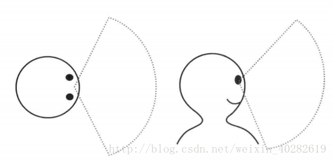
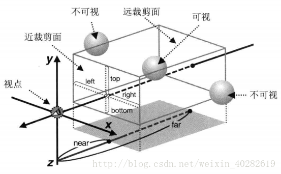
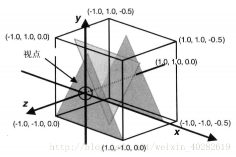
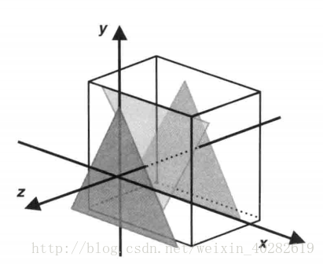

对应《WebGL编程指南》第七章 26-OrthoView、27-LookAtTrianglesWithKeys_ViewVolume
要点：可视空间（正射类型、透视投影）、可视范围（正射类型）、盒状可视空间
知识点
一、可视范围（正射类型）
回顾：在上一节的最后一个示例程序中，当视点在极左或极右的位置时，三角形会缺少一部分。
三角形缺了一角的原因是，我们没有指定可视范围，即实际观察得到的区域边界。如前一章所属，WebGL 只显示可视范围内的区域。例中当我们改变视点位置时，三角形的一部分到了可视范围外，所以图中的三角形就缺了一个角。
1.1 WebGL绘制可视范围内三维对象的方式
虽然你可以将三维物体放在三维空间中的任何地方，但是只有当它在可视范围内时，WebGL 才会绘制它。事实上，不绘制可视范围外的而对象，是基本的降低程序开销的手段。绘制可视范围外的对象没有意义，即使把它们绘制出来也不会在屏幕上显示。从某种程序上来说，这样也模拟了人类观察物体的方式，如下图所示。我们人类也只能看到眼前的东西，水平视角大约200度左右。总之，WebGL 就是以类似的方式，只绘制可视范围内的三维对象。

除了水平和垂直范围内的限制，WebGL 还限制观察者的可视深度，即”能够看多远“。所有这些限制，包括水平视角、垂直视角和可视深度，定义了可视空间。由于我们没有显式地指定可视空间，默认的可视深度又不够远，所以三角形的一个角看上去就消失了。
1.2 可视空间
有两类常用的可视空间：
- 长方体可视空间，也称盒状空间，由正射投影产生。
- 四棱锥/金字塔可视空间，由透视投影产生。
在透视投影下，产生的三维场景看上去更是有深度感，更加自然，因为我们平时观察真实世界用的也是透视投影。在大多数情况下，比如三维射击类游戏中，我们都应当采用透视投影。相比之下，正射投影的好处是用户可以方便比较场景中物体的大小，这是因为物体看上去的大小与其所在的位置没有关系。在建筑平面图等技术绘图的相关场合，应当使用这种投影。
1.3 基于正射投影的盒状可视空间的工作原理
盒状可视空间的形状如下图所示。可视空间由前后两个矩形表面确定，分别称近裁剪面和远裁剪面。
-
前者的四个顶点为
（right, top,-near），（-left,top,-near），（-left,-bottom,-near），（right,-bottom,-near） -
后者的四个顶点为
（right, top,-far），（-left,top,-far），（-left,-bottom,-far），（right,-bottom,-far）。

<canvas> 上显示的就是可视空间中物体在近裁剪面上的投影。如果剪裁面的宽高比和 <canvas> 不一样，那么画面就会被按照 <canvas>的宽高比进行压缩，物体会被扭曲。近裁剪面与远裁剪面之间的盒装空间就是可视空间，只有在此空间内的物体会被显示出来。如果某个物体一部分在可视空间内，一部分在其外，那就只显示空间内的部分。
1.4 定义盒状可视空间
cuon-matrix.js 提供的 Matrix4.setOrtho()方法可用来设置投影矩阵，定义盒状可视空间。
| 参数 | Matrix4.setOrtho(left, right, bottom, top, near, far) |
|---|---|
| left, right | 指定近裁剪面（也是可视空间的，下同）的左边界和又边界 |
| bottom,top | 指定近裁剪面的上边界和下边界 |
| near, far | 指定近裁剪面和远裁剪面的位置，即可视空间的近边界和远边界 |
我们在这里又用到了矩阵。这个矩阵被称为正射投影矩阵。示例程序 OrthoView 将使用这种矩阵定义盒装可视空间，并绘制3个与 LookAtRotatedTriangles 中一样的三角形，由此测试盒装可视空间的效果。LookAtRotatedTriangles 程序将视点放在一个指定的非原点位置上，但本例为方便，直接把视点置于原点处，视线为Z轴负方向。
可视空间如下图所示，near = 0.0，far = 0.5，left = -1.0，right = 1.0，bottom = -1.0，top = 1.0，三角形处于Z轴 0.0 到 -0.4 区间上。

此外，示例程序还允许通过键盘按键修改可视空间的 near 和 far 值。这样我们就能直观地看到这两个值具体对可视空间由什么影响。下面列出了各按键的作用。
| 按键 | 作用 |
|---|---|
| 右方向键 | near提高0.01 |
| 左方向键 | near降低0.01 |
| 上方向键 | far提高0.01 |
| 下方向键 | far降低0.01 |
1.5 代码分析
1.5.1 实现步骤
与 LookAtTrainglesWithKeys 类似，本例也定义了 keydown()函数，每当按下按键时，匿名的事件响应函数就会调用 keydown()函数。keydown()函数首先更新 near 和 far 的值，然后调用 draw()函数进行绘制。draw()函数将设置可视空间，更新页面上文本显示的 near 和 far 的值，并绘制3个三角形。最关键的事情是设置可视空间，就发生在 draw()函数中。但是在深入研究前，先来看一下JS如何修改页面上的文本。
1.5.2 JS 修改 HTML 元素
JS 修改 HTML 元素中内容的方法很简单。首先调用 getElementById()并传入元素的 id，获取待修改的HTML 元素。
在示例程序中，我们把下面这个 <p> 元素中的文本改成了“near:0.0, far:0.5”：
1 | <p id = "nearFar">The near and far values are displayed here.</p> |
在 OrthoView.js 中，我们调用 getElementById()并传入元素的 id 值 “nearfar” 以获取该元素。如下所示：
1 | var nf = document.getElementById("nearFar"); |
一旦 nf 变量获取了 <p> 元素，就可以直接通过其 innerHTML 属性来进行修改，比如，如果你写下：
1 | nf.innerHTML = 'Good Morning,Marusyje-san!' |
在执行之后，”Good Morning,Marusyje-san!” 这段文本就显示了在页面上。你也可以在文本中加入 HTML 标签，比如‘Good Morning <b>Marisuke<b>-san!’，就会以突出显示“Marisuke”。
在OrthoView.js 中，可视空间的 near 和 far 的值会存储在全局变量 g_near 和 g_far 中。
1.5.3 顶点着色器的执行流程
本例中的顶点着色器与 LookAtTraingles.js 中的几乎一样，只是 uniform 变量变成了 u_ProjMatrix。该变量存储了可观空间的投影矩阵，我们将投影矩阵与顶点坐标相乘，再赋值给 gl_Position。
1 | var VSHADER_SOURCE = |
当键盘的上方向键被按下时，事件响应函数就会执行并调用 keydown()。注意我们将 nf 作为最后一个参数传入，这样 keydown()函数就能够访问并修改 <p> 元素了。keydown()函数最后调用了 draw()函数绘制三角形，这样每次按键后都会重绘整个图形。
1 | //注册键盘事件响应函数 |
keydown()函数首先检查哪个键被按下，然后根据按下的键，修改 g_near 和 g_far 的值，最后调用 draw()函数。注意，这里 g_near 和 g_far 是全局变量，不管是 keydown()还是 draw()函数都可以访问它。
1 | // 视点与近、远裁剪面的距离 |
再看一下 draw()函数，它与 LookAtTriangle.js 中的几乎一样，唯一的区别是它修改了网页上的文本信息。
1 | function draw(gl, n, u_ProjMatrix, projMatrix, nf) { |
draw()函数计算出可视空间对应的投影矩阵 projMatrix，将其传递给着色器中的 u_ProjMatrix 变量，接着在页面上更新 near 和 far 的值，最后绘制出三角形。
1.5.4 修改 near 和 far 值
运行程序，按下右方向键逐渐增加near 值，你会看到三角形逐个消失了。
默认情况下，near 值为 0.0，此时3个三角形都出现了。当我们首次按下右方向键时，将 near 值增加至 0.01 时，处在最前面的蓝色三角形消失了。这是因为，蓝色三角形就在 XY 平面上，近裁剪面越过了蓝色三角形，使其处在了可视空间外。

我们接着继续增大 near 值，当 near 值大于 0.2 时，近裁剪面越过了黄色三角形，使其处在可视空间外。黄色三角形也消失了，视野中只剩下绿色三角形。此时，如果你逐渐减小 near 值使其小于 0.2，黄色的三角形就会重新出现，而如果继续增大 near 值使其大于 0.4，绿色的三角形就会小时，视野中将空无一物，只剩下黑色的背景。
同样，如果你改变 far 的值，也会产生类似的效果。随着 far 值的逐渐减小，当值小于 0.4 时，绿色三角形会首先消失，小于 0.2 时，黄色三角形小时，最终只剩下蓝色三角形。
二、补上缺掉的角
在 LookAtTrianglesWithKeys 中，当你多次按左或右方向键，处于极左处或极右处观察三角形时，会发现三角形看上去缺了一个角。通过前一节的讨论，我们已经很明确地知道这时因为三角形的一部分处于可视区域之外，被裁剪掉了。这一节，我们就来修改程序，适当地设置可视空间，确保三角形不被裁剪。
从上节中可以看出，三角形中距离视点最远的角被裁剪了。显然，这是由远裁剪面过于接近视点导致，我们只需要将远裁剪面移到距离视点更远的地方。为此，我们可以按照以下的配置来修改可视空间：left = -1.0，right = 1.0，bottom = -1.0，top = 1.0，near = 0.0，far = 2.0。
程序涉及两个矩阵：关于可视空间的正射投影矩阵，以及关于视点与视线的视图矩阵。在顶点着色器中，我们需要用视图矩阵乘以顶点坐标，得到顶点在视图坐标系下的坐标，再左乘正射投影矩阵并赋值给 gl_Position。如下表达式：
<正射投影矩阵>x<视图矩阵>x<顶点坐标>
1 | var VSHADER_SOURCE = |
在计算正射投影矩阵 projMatrix 时，我们将 far 的值从 1.0 改成 2.0，将结果传给了顶点着色器中的 u_ProjMatrix。投影矩阵与顶点无关，所以它是 uniform 变量。运行示例程序，然后像之前那样移动视点，你会发现三角形再也不会被裁剪了。
实例
代码1
1 | //LookAtTrianglesWithKeys.js |
效果1


代码2
1 | //LookAtTrianglesWithKeys_ViewVolume.js |
效果2
Tips: Please indicate the source and original author when reprinting or quoting this article.